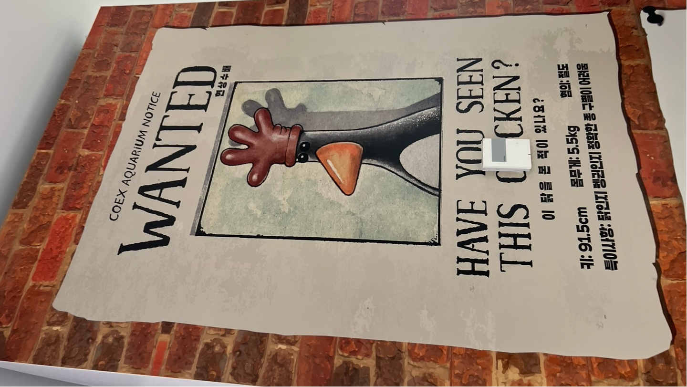

< 전시회 후기 >
AI EXPO KOREA 2025 국제인공지능대전을 보면서 느낀점 중
제일 첫번째는 AI 관련 분야 기업들이 무수히 많다는 것에 놀랐다.
엄청 큰 공간에 많은 기업들이 빼곡히 자리해 있었다.
두번째는 내가 인공지능 수업 때 배우던 것들이 전시되어 있던 것이다.
모르는 기업들 속 지루하던 찰나에 재미와 흥미를 느낄 수 있었다.
세번째는 사전에 좀 알아보고 올 걸 하는 아쉬운 마음이었다.
애초에 이런 전문적인 전시회인 줄도 몰랐고,
내가 모르는 기업들이 너무 많았기에 뭘 보려고 해도 다 어려울 뿐이었다.